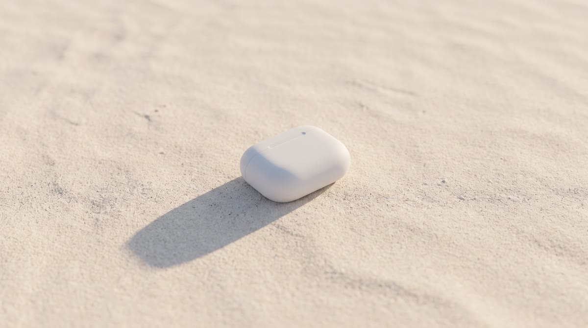
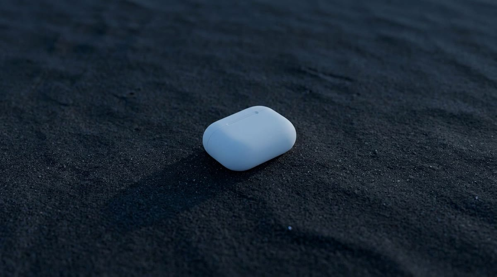
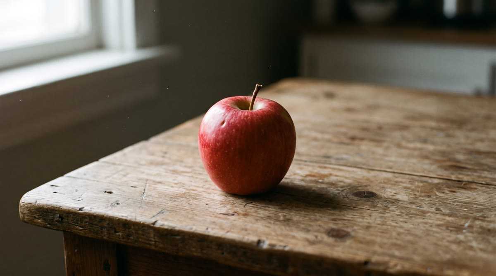
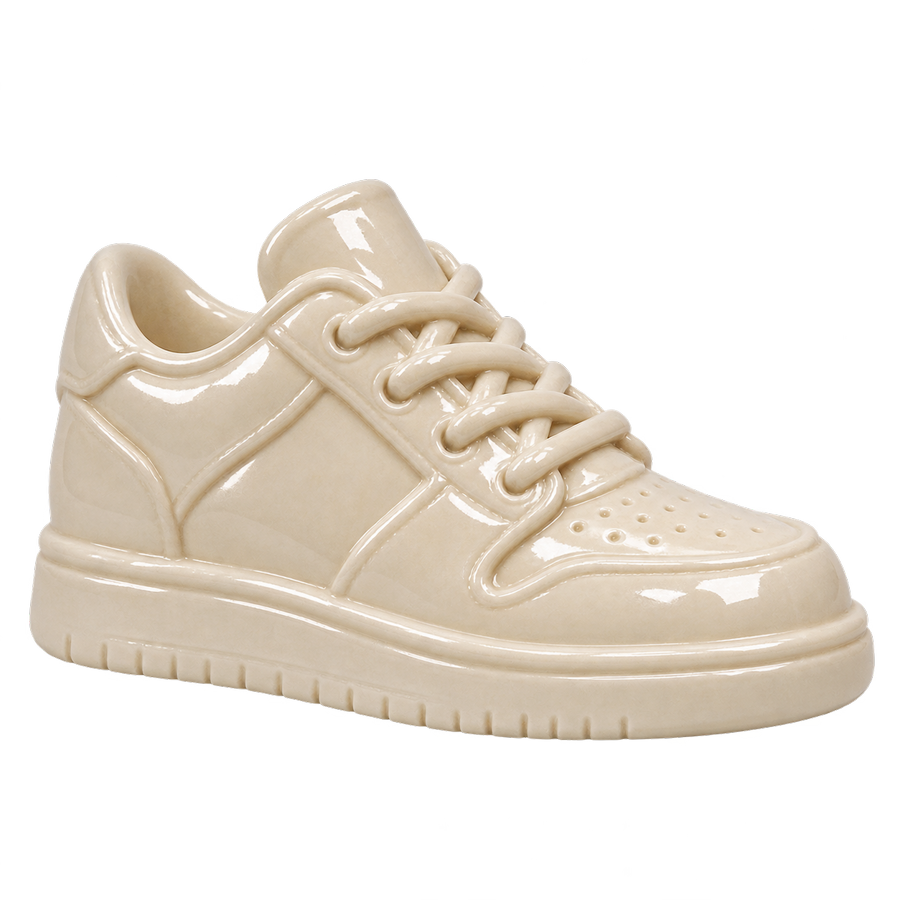
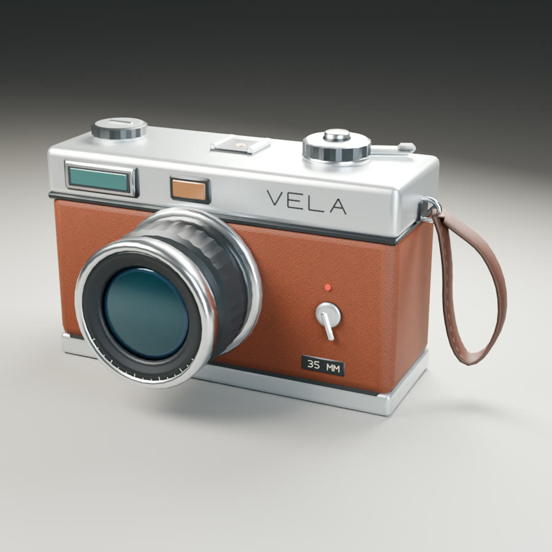

Unedited results from the test runs. Prompts are shortened.
"A single origami crane made of teal paper on a white marble table, soft overhead light." 1:1 · 42 s
1:1 · 42 s


"Same case and composition, on black volcanic sand at dusk." The case stays, the world changes.

A plain chat message that Gemini answered with an image. The server saved it to the project too.

"A glossy ceramic sneaker sculpture, studio product shot", with a real alpha channel. 31 s
31 s

"A stylised low-poly vintage film camera." Modelled, textured, exported and re-imported to check. 7,430 tris
7,430 tris
"Slow push-in on a misty pine forest at sunrise." A 6 s 1080p loop built from a generated plate with parallax.